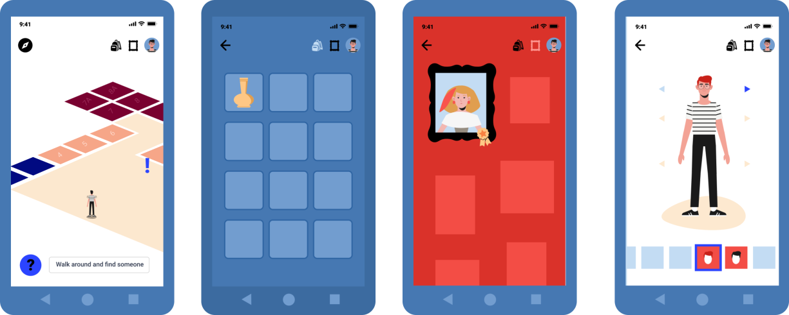
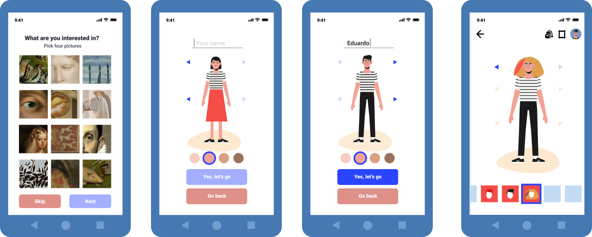
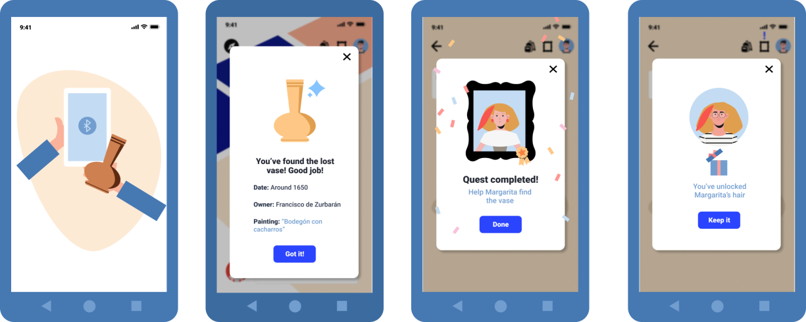
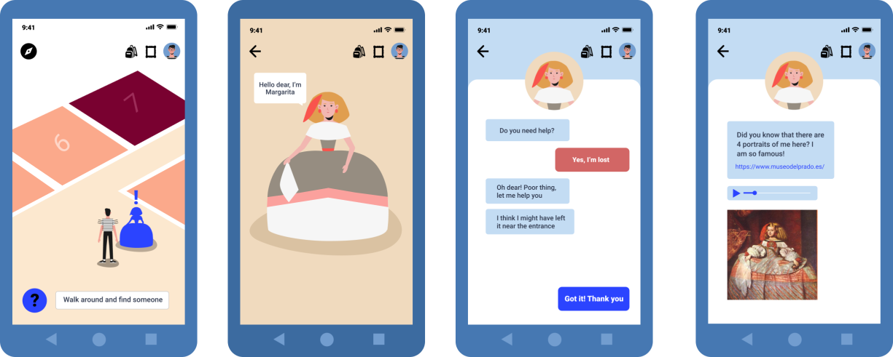

PlayArte is an experience that allows the user to live a personalized
visit to the Prado Museum, interacting both physically and digitally with the
artworks
and creating
their own adventure.
This project originated as part of the selection process for a scholarship at
the 'Museo
Nacional del Prado' and developed during the course of "How to get a UX job"
Bootcamp by
the Interaction Design Foundation
Motivation and audience
Teenagers in the museum
Capturing the interest of younger audiences is not an easy task for art museums.
In the
Prado Museum
there are already didactic materials that have been developed with this problem
in mind
so that,
playing, the little ones have a positive experience and become interested in
learning
about the
paintings and characters that inhabit the museum.
However, adolescents (from 13 to 18 years old) are a different case, difficult
to
please. Art museums
for them can seem strange, old, not welcoming, for older people, even boring.
In the museum there is no specific tool designed that helps
them explore the museum in an autonomous, personalized and exciting way.
With all this in mind, I saw the opportunity to design a project that manages to
make
teenagers interested in the museum's collections, learn, have
fun, feel the museum as their own and return
frequently.
What is 'PlayArte'?
The best way to explain what is PlayArte is to accompany Eduardo on his visit to
the museum.
Eduardo is a fourteen-year-old passionate about new technologies
and
video games. His phone is an extension of his hand and he doesn't leave
the
house without it. His
family dragged him on a Saturday morning to go to the Prado Museum, and
needless
to say, he is not a big
fan of neither getting up early nor seeing old paintings.
The prototype

Interface
The interface is divided into four main screens. The map, the main
feature. Here the user can see the interactive objects and characters there are
through the museum, as well as using it to move. The backpack, where al
the objects the user finds will be digitally stock to later be used. The
gallery, each time the user completes a quest with a different
character a picture will be hung. They will be able to keep on talking with the
characters clicking on said picture. Lastly, the avatar. Each user can
choose how they will appear on their map. As they continue to play and interact
they will unlock more and more content to further customize their avatar.

Customization
One of the most important features of the project is the personalized experience
it offers the user. For this reason, the first time a user opens the app they
will be able to choose the type of art they are more interested in. This way,
the characters they will encounter will be more likely the ones related to their
preferred artwork.

Quests
The quests are what the app is based around. They are the motivation for the user to walk around, here about different artworks and interact with the museum in a different way. The mechanism is simple, a user finds a character who asks them a favour (talk to another person, find a specific object, go to a painting...) Once the user does this task, sometimes they will have to return back to the character and other times they will start a new quest related. At the end of each quest, users will receive a prize, normally a piece of clothing, hairstyle or object they can customize their avatar with.

Museum characters
These characters are renowned personalities that wander around the museum eager to talk with anyone. They are painters, kings, queens, animals, greek gods... They escape their paintings and the user can see them through PlayArte.
Now that you know how it works, you can try the prototype here